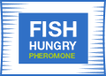

<section class="info__section">
    <div class="container">
        <div class="info__section-wrapper">
            <h2 class="info__section-title">
                Принцип дії
            </h2>
            
            <p class="info__text">
                Головним принципом Fish Hungry є постійне підвищене відчуття голоду, особливо у великої риби.
            </p>
            
            <p class="info__text">
                Fish Hungry працює безпосередньо на інстинкти риби на фізіологічному рівні, спершу, щоб привабити з далекої відстані і змусити шукати їжу в місці підгодовування, а потім стимулює активне поглинання цієї їжі, навіть ситою рибою.
            </p>
            
            <p class="info__text">
                Дія ґрунтується на феромонах - біологічно активних речовинах, що виділяються живими організмами в навколишнє середовище і специфічно впливають на поведінку, фізіологічний та емоційний стан або обмін речовин інших особин того ж виду.
            </p>
        </div>
    </div>
</section>